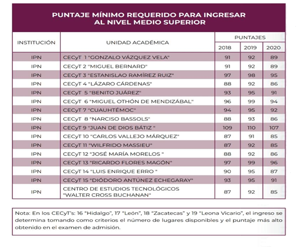

Puntajes 2021
Puntajes minimos para ingresar al nivel medio Superior en el IPN
A continuacion, se enlistan los puntajes requeridos por los Centros de Estudios Cientificos y Tecologicos CECyT's y el Centro de Estudios Tecnologicos (CET 1) del area Metropolitana, conocidos como vocacionales, de acuerdo a la oferta y demanda de cada unidad academcia.